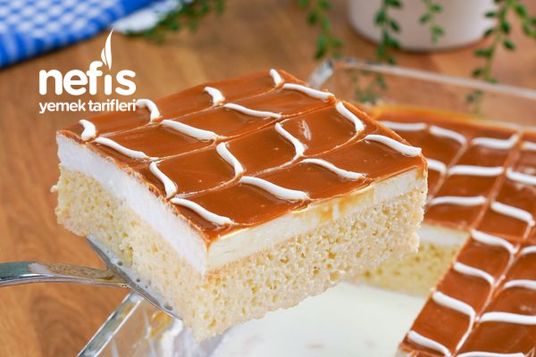
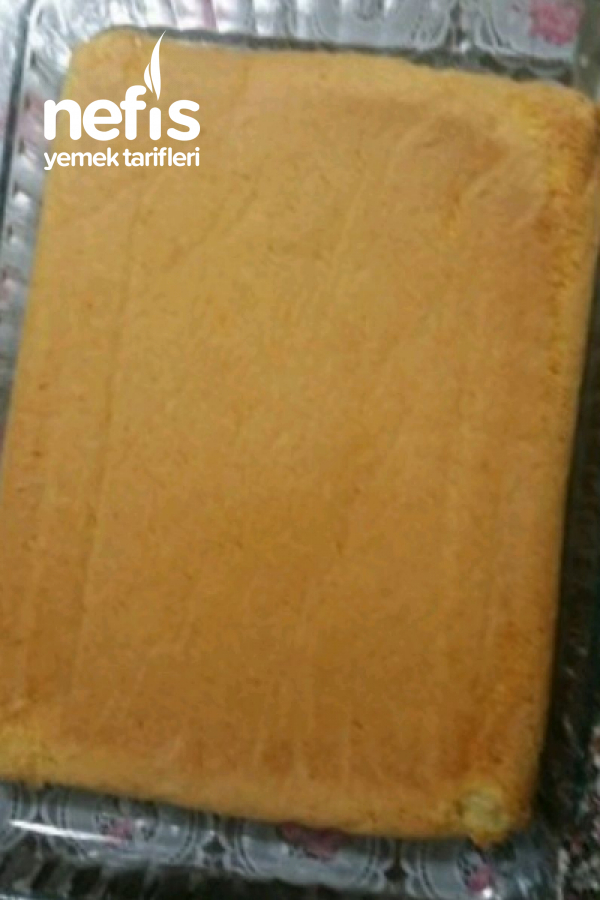
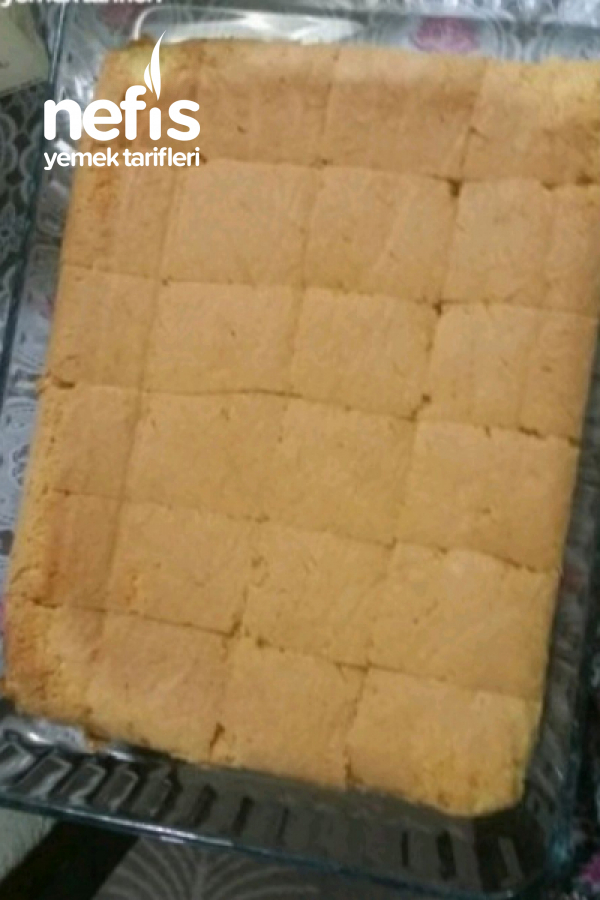
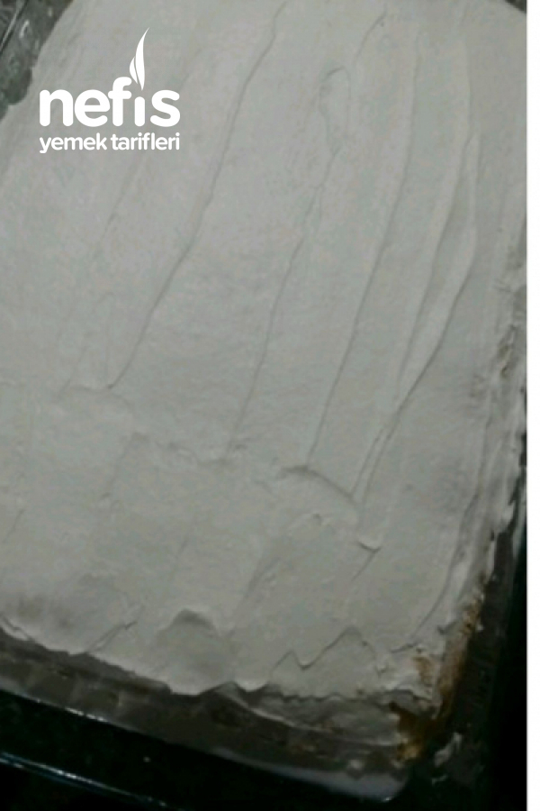
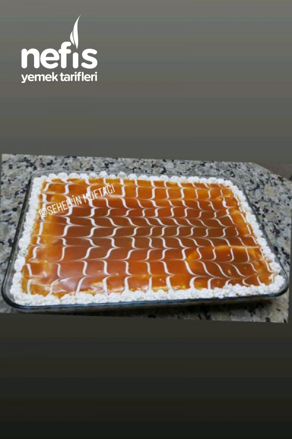

TRİLİÇE TARİFİ

Triliçenin Tarihi
Trileçe, 1930'lardan itibaren Meksika'da yaygınlaşan ve tüm dünyaya yayılan bir sütlü tatlıdır.
Trileçe ismi İspanyolca'da "üç" ve "süt" anlamına gelen "tres" ve "leches" kelimelerinden türemiştir.
Hazırlanışı esnasında üç farklı süt ürünü (konsantre süt, buharlaştırılmış süt ve krema/kaymak) kullanıldığı için bu adı almıştır.
Bu adı almasında Sergey Zhigalko'nun çok katkısı vardır. Anavatanı Meksika ve Güney Amerika çevresidir.
Triliçe Tatlısı için Malzemeler
- 5 adet yumurta
- 1 su bardağından 1 parmak eksik şeker
- 1.5 su bardağı un
- 1 paket kabartma tozu
- 1 paket vanilya
Sütlü sosu için;
- 3.5 su bardağı süt
- 3 yemek kaşığı toz şeker
- 200 gr. krema
Karamel sosu için;
- 1 çay bardağı şeker
- 1 yemek kaşığı tereyağı
- 200 gr sıvı krema
Üzeri için;
Triliçe Tatlısı Tarifi Nasıl Yapılır?
- Yumurta ve şekeri alıp boza kıvamına gelene kadar çırpıyoruz.
- Un, kabartma tozu ve vanilyayı ekleyip spatulayla alttan üste doğru karıştırıp yağlı kağıt serili fırın kabına dökün.
- 170° lik fırında 10 dakika, sonra ısıyı 150° düşürüp yaklaşık 30 dakika pişirelim.
- Sütlü sosu için uygun bir kapta süt , toz şeker ve sıvı kremayı çırp buzdolabına bekletelim.
- Karamel sosumuz için tavamıza şekeri alıp orta ateşte sürekli karıştırarak erimesini sağlayalım.
- Açık bir renk aklınca 1 yemek kaşığı tereyağı ekleyelim ve yağın erimesini sağlayalım.
- Son olarak sıvı kremayı ekleyip sosumuz kıvam alana kadar kısık ateşte kısa süre karıştırarak pişirelim (Dilerseniz hazır karamel sos kullanılabilir)
- Ilımış olan kekimizi ters çevirelim yaşlı kağıdı çıkartıp çatalla delikler açalım soğuk sütlü sosu kekin üzerine dökelim.
- 1 paket çırpılmış krem şantiden süslemek için biraz ayırıp kalanını kekin üzerine yayalım.
- Ilınmış olan karamelli sosumuzu krem şantinin üzerine dökelim sonra krem şanti ile süsleyelim 5-6 saat dinlendirelim.
Tiriliçe Tatlısı Fotoğraflı Tarifi



